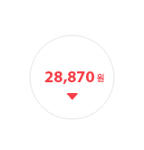

마트모아 장바구니 활용법

-
STEP1
장바구니에서
수량 수정 및 삭제 -
STEP2

마트모아 추천
장바구니를 선택하여
최적의 장바구니를
비교하며 선택추천장바구니란?
* 동급의 상품과
배송비를 매칭하여
최적의 장바구니를 추천 -
STEP3
각 마트(이마트,
홈플러스, 롯데마트) 의 계정정보를 확인 후 등록 -
STEP4
각 마트에 전송완료
-
STEP5
각 마트에서
로그인 후
장바구니에 담겨있는
상품 확인 후
구매 결제